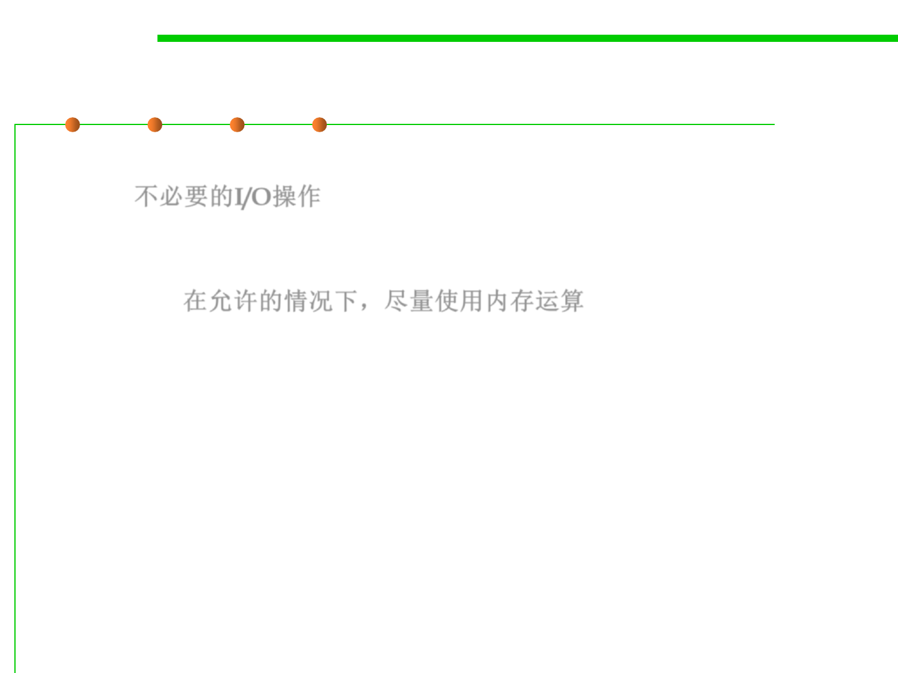

(1) I/O
8.3 Code Tuning for Performance Optimization
▪ One of the most significant sources of inefficiency is unnecessary
I/O. 不必要的I/O操作
▪ If you have a choice of working with a file in memory vs. on disk, in
a database, or across a network, use an in-memory data unless space
is critical. 在允许的情况下，尽量使用内存运算